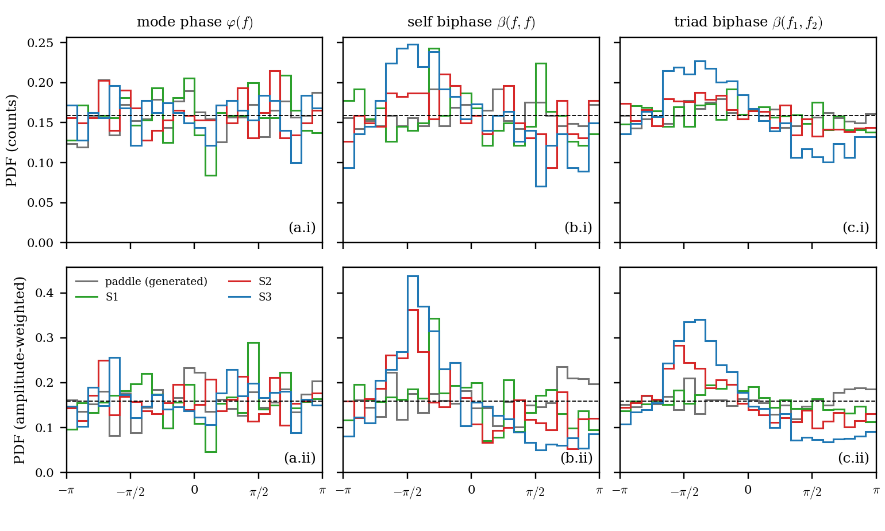
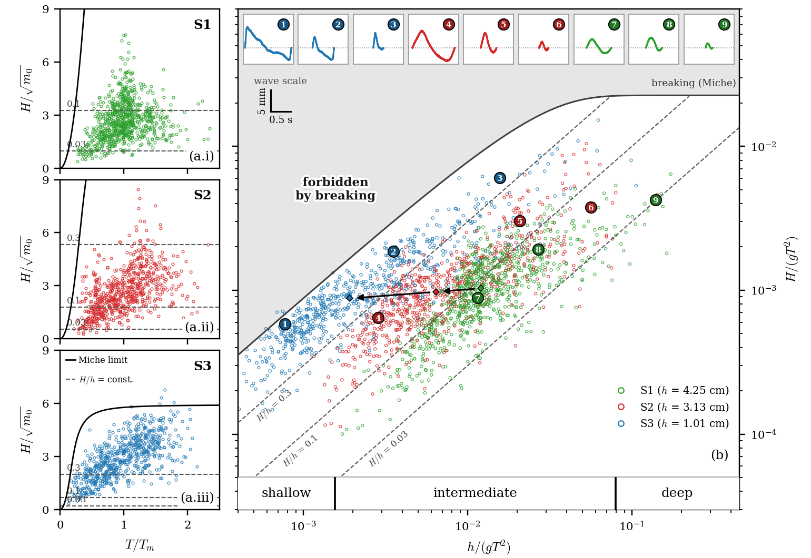
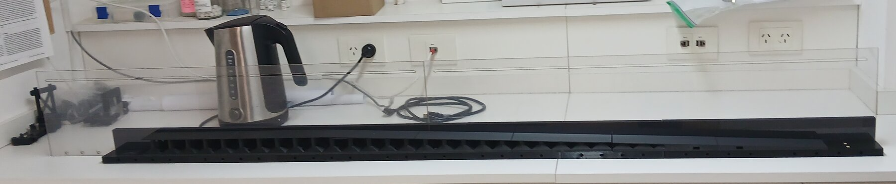
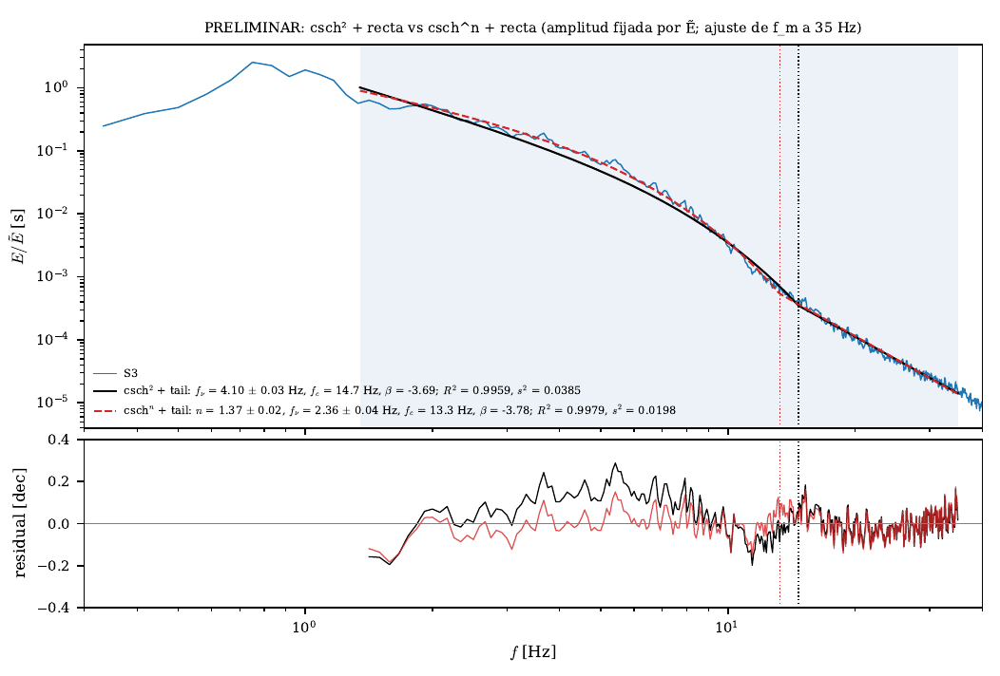
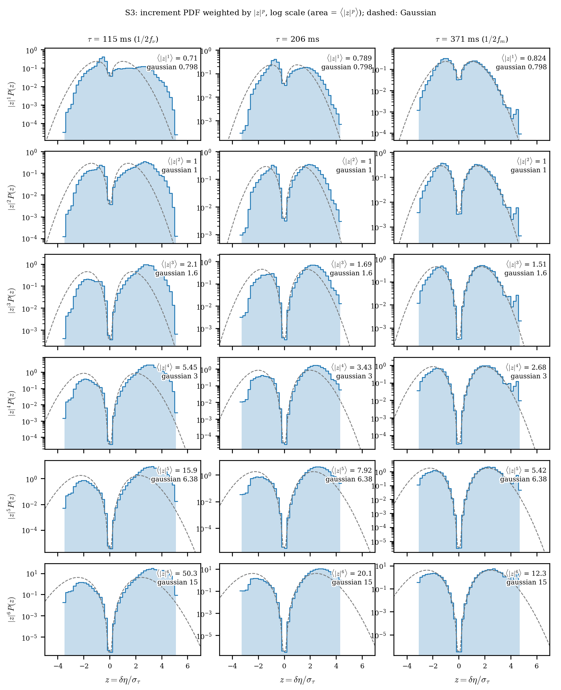
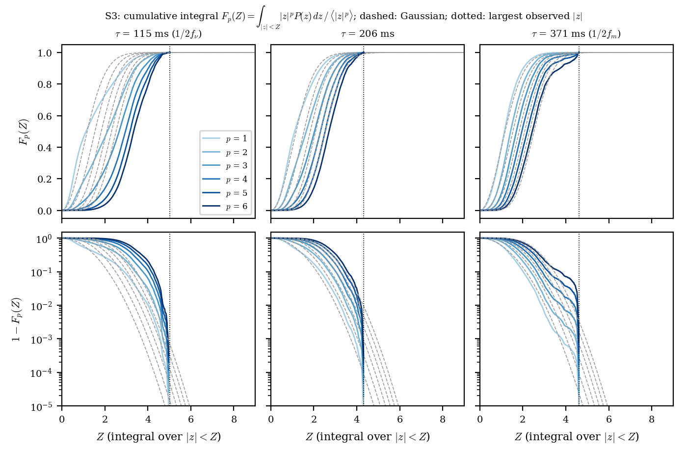

Journal Week 47
Table of Contents
- Referencias
- 2026-11-16
- [09:10] Día 14: seguimos con las figuras del manuscrito
- [09:40] Fases: de lo generado (aleatorio) a las olas triangulares
- [10:05] Asimetría y curtosis con signo de los incrementos (S3, JONSWAP)
- [11:00] Mini presentación para la reunión de grupo
- [15:00] Prueba: ζp de dos puntos promediado sobre las mediciones largas del Día 1 (solo Journal)
- 2026-11-17
- [17:50] PDF de los incrementos pesadas por |δη|p: ¿está bien determinado Sp?
- [19:30] Apéndice del manuscrito: respuesta y ruido del sensor (Parte V de manuscritofinal.pdf, Día 14/Figuras del manuscrito)
- [20:45] Prueba (tiempo libre, NO va al manuscrito): Fig. 6 con H/h constante en lugar de la asimetría de 2.º orden = 10 %
- 2026-11-19
- [09:30] Render nuevo de Fusion para la Fig. 1a (Día 16)
- [10:00] Papers:
~/Documentos/Papers/Olas rompientes en escala de laboratorio/ - [12:30] Paper: Nube del DF, carpeta reorganizada y esqueleto para PRF
- [12:35] Montaje: rampa nueva en el setup nuevo
- [14:55] Paper: ajuste partido del espectro principal y prueba con cschn (preliminar)
- [16:25] Paper: revisión completa de las figuras del manuscrito (estilo único y ajustes)
- 2026-11-20
Referencias
2026-11-16
[09:10] Día 14: seguimos con las figuras del manuscrito
Tercera iteración/Día 14/Manuscrito/= copia del Día 13 (sin build/); el PDF definitivo compila ahora a Day16/manuscritodefinitivo.pdf.- Figs. 8+9 combinadas (propuesta, todavía fuera del PDF): se mantiene la normalización con \(\sqrt{m_0}\) y el eje x de las alturas es el doble que el de las crestas (0–5,5 y 0–11), así Rayleigh se ve igual en las dos filas. Eje y hasta \(3\times10^{-4}\) para que las etiquetas de panel no tapen las últimas olas. Falta el okay.
[09:40] Fases: de lo generado (aleatorio) a las olas triangulares
- Idea del usuario (fin de semana): PDFs de las fases, para mostrar que pasan de aleatorias (lo generado) a algo no aleatorio en las olas triangulares.
- Script
Día 14/Manuscrito/Códigos/extra_fases.py→Figuras/extra_fases.png(exploración, fuera del PDF). Paleta (CSV del LinMot) y S1–S3 de JONSWAPBONNETON395; tramos de 6,4 s con Hann y 50 % de solape, dentro de los bloques de 30 s del lock-in. - La fase de cada modo, \(\varphi(f)\), es uniforme en todas las señales: no sirve, porque el origen de tiempo de cada tramo es arbitrario. Lo que mide el acople es la bifase \(\beta(f_1,f_2)=\arg[X(f_1)X(f_2)X^*(f_1+f_2)]\).
- Bifase ponderada por amplitud: la paleta es plana (fases aleatorias), S1 está cerca de 0 (tipo Stokes) y S2–S3 tienen un pico en \(-\pi/2\) (diente de sierra, Elgar & Guza 1985). Bifase del biespectro: S1 −34°, S2 −81°, S3 −67° (todas las tríadas). Largo del vector medio R: paleta 0,02, S1 0,03, S2 0,06, S3 0,17 (ruido \(1/\sqrt{N}\approx 0,03\)).
- El usuario: queda solo en el Journal (no va al manuscrito).

[10:05] Asimetría y curtosis con signo de los incrementos (S3, JONSWAP)
- Pedido del usuario: “calcular como hicimos Sp^± la kurtosis y skewness ±. ¿Debería ir como τ-1 alguna?”
Día 14/Momentos con signo/Códigos/momentos_signo.py(misma serie y definiciones que el apunte del Día 12). \(Sk^\pm = S_3^\pm/(S_2^\pm)^{3/2}\) y \(K^\pm = S_4^\pm/(S_2^\pm)^2\), promediando sobre todas las ventanas. Comparo con el esqueleto (diente de sierra con los J y T medidos) y con IAAFT. Números enResultados/momentos_signo.txt.- Teoría: si solo las ventanas que contienen un frente dan \(\delta^+\) grande (probabilidad \(f_b\tau\), \(\delta\approx J\)), entonces \(K^+ \approx \frac{\langle J^4\rangle}{\langle J^2\rangle^2}(f_b\tau)^{-1}\) y \(Sk^+ \approx \frac{\langle J^3\rangle}{\langle J^2\rangle^{3/2}}(f_b\tau)^{-1/2}\). El esqueleto cumple exactamente −1 y −1/2 entre 3 y ~90 ms.
- Dato: la pendiente local más empinada de \(K^+\) es −0,66 (en 118 ms) y la de \(Sk^+\) es −0,32 (en 136 ms). Nunca llega a −1: por debajo de ~10 ms el frente tiene ancho finito y \(K^+\) se aplana, y arriba de ~300 ms vuelve al valor gaussiano. El nivel sí sale sin parámetros libres: en \(1/2f_\nu\), \(K^+\) medido 9,4 contra 8,3 predicho y \(Sk^+\) 2,88 contra 2,79. IAAFT da pendiente ≈ 0.
- El usuario: queda solo en el Journal (no va al manuscrito).
- Lado −: tiene un máximo en 20–40 ms (\(K^-\) ≈ 9,6, por encima del gaussiano 6), que el esqueleto no tiene. Candidato: la caída rápida después de la punta solitaria (a confirmar).

[11:00] Mini presentación para la reunión de grupo
- 5 min, 6 diapositivas, Beamer: montaje, rotura ola por ola (Fig. 6), espectro contra GLOBEX y \(f_\nu(h)\), intermitencia (Fig. 15), estado del manuscrito.
- Carpeta nueva para las reuniones (pedido del usuario):
~/Documentos/Reuniones de Labo/(al lado dePresentaciones/), una subcarpeta autocontenida por reunión con copias de las figuras, másPlantilla/(estilolabo.sty) y README. - Hoy:
Reuniones de Labo/2026-11-17/labo_2026-11-17.pdf(la reunión es el 17/11). - [09:35] Título: “Rompimiento de olas en una playa a escala de laboratorio”. Diapo 2 = GIF del video del Día 1 (13/10) + Fig. 1b + Fig. 3; diapo 3 = GIF del video de prueba del 24/08 (el de la Fig. 2) + Fig. 2b. Applet para elegir segmento y ROI y exportar GIF:
Reuniones de Labo/Herramientas/elegir_gif.py. La carpeta se llama “Reuniones de Labo” (las reuniones de grupo más grandes irían aparte). - [10:00] Videos que se reproducen solos en la diapositiva:
animateno anduvo en xreader; se instaló pdfpc y los GIFs pasaron a clips webm (\clipcon pdfpc-movie). Diapo del montaje: video + esquema a la izquierda; forzado JONSWAP (serie y espectro, eje a la izquierda) a la derecha. - [10:30] Diapositivas nuevas: “La evolución de la ola” (video de la prueba → Fig. 2b + Fig. 4 apaisada con los recuadros), “Ola por ola” (Figs. 5 y 6) y “El tipo de rompimiento” (Fig. 7 + anatomía nueva).
- Anatomía nueva para el manuscrito:
Día 14/Manuscrito/Códigos/fig_anatomia_top10.py→AN_top10.pdf. S3, 10 % de olas con mayor salto J (69 olas, J ≥ 5,9 mm), alineadas en el frente: promedio ± std y zonas valle / frente (≈ 80 ms) / punta (≈ 80 ms) / espalda (≈ 740 ms). J medio = 0,59 h. - [11:00] Presentación completa (pedido del usuario): espectro (barrido con solo fν libre + ecuación de Bonneton; clic: colapso, clic: GLOBEX), saturación y análisis dimensional (Fig. 11 b–c con ecuaciones), incrementos (Fig. 15, fila de arriba), Sp con n = 2, separación de escalas (Fig. 18 + RB, tν, Tm/tν) y Sp^± + IAAFT (nueva: serie, espectro, PDF y ζp dato contra IAAFT). Las diapositivas del primer borrador quedaron en
descartadas_2026-11-16.tex. Falta reordenar con el usuario. - [11:50] Anatomía de la ola (para la reunión y el manuscrito): promedio ± std del 10 % de olas más grandes (S3, 69 olas), zonas valle/frente/punta/espalda, frente tanh con t* = 22,8 ms (subida 10–90 % ≈ 50 ms, igual al tν = 51 ms del espectro) y rectas en el valle y la espalda que muestran la concavidad. Reemplaza la sección de anatomía del manuscrito definitivo (Day16); la vieja quedó guardada.
- [12:40] Manuscrito definitivo podado a las figuras de la presentación (Day16/manuscritodefinitivo.pdf); la versión completa quedó en Day16/manuscritocompleto16-11.pdf. Figuras nuevas: Sp de dos puntos y ESS, Sp± con ζ⁺/ζ⁻/total, IAAFT (series, espectro, PDF y exponentes). Sin la recta monofractal p/2 (un gaussiano da p ζ₂/2).
- [13:30] Cierre del día: (1) todo el análisis pasó a “solo fν libre” (amplitud fijada por Ẽ): fν = 4,35 Hz, RB = 127, 1/2fν = 115 ms; barrido fν ∝ h^−0,47±0,04, κ = 0,58 ± 0,09; intermitencia y GLOBEX recalculados (Tm/tν: cuba 14, GLOBEX 13). (2) Presentaciones de la reunión del 17/11 (larga, corta y una copia con todas las animaciones) en
~/Documentos/Reuniones de Labo/2026-11-17/. (3) Manuscrito definitivo podado + copia del estado (Day16/manuscritodefinitivoestado16-11.pdf) + versión final limpia (Day16/manuscritofinal.pdf, 35 p.: solo figuras, resultados, procedimiento y notas para el texto). (4) Directorio autocontenidoDía 14/Figuras del manuscrito/con un script por figura (Por figura/) y el texto final.
[15:00] Prueba: ζp de dos puntos promediado sobre las mediciones largas del Día 1 (solo Journal)
- Panel (c) de la Fig. 15b con las 8 mediciones largas del Día 1 (S3, ~510 s), cada una con su fm, su fν (solo fν libre) y su rango 1/2fν–1/2fm. Script
Día 14/Manuscrito/Códigos/extra_zeta_largas.py. - Promedio ± desvío entre mediciones: ζ1 0,37 ± 0,06; ζ2 0,56 ± 0,13; ζ3 0,64 ± 0,21; ζ4 0,64 ± 0,27; ζ5 0,60 ± 0,32; ζ6 0,56 ± 0,37. Satura en ~0,6 (la principal, en ~0,5).
- Dos grupos: “muchos forzados” con ζ6 ≈ 0,9–1,1 (cerca de Burgers) y Bonneton custom/h35 con ζ6 ≈ 0,13–0,15 (fm ≈ 2,3 Hz, rango corto 133–219 ms, poco confiable). Promediar mezcla forzados y separaciones de escala distintos: mejor separar por familia o contra Tm/tν. Queda fuera del manuscrito por ahora.

2026-11-17
[17:50] PDF de los incrementos pesadas por |δη|p: ¿está bien determinado Sp?
- Apunte: Day17/pdfpesadas.pdf (fuente en
Tercera iteración/Día 15/PDF pesadas/; scriptsDía 14/Figuras del manuscrito/Códigos/extra_pdf_pesadas.pyyextra_pdf_pesadas_error.py). - S3, filas p = 1–6, columnas τ = 115 / 206 / 371 ms (1/2fν, centro, 1/2fm). El integrando |z|p P(z) tiene área ⟨|z|p⟩ y muestra qué incrementos ponen cada momento; versión en mm (área = Sp).
- En 115 ms los momentos altos son los frentes: ⟨|z|6⟩ = 50 ± 5 contra 15 gaussiano, 96 % desde δη > 0. En 371 ms, bimodal y casi gaussiano (12,3 ± 1,6 contra 15, marginal).
- Determinación: hasta p = 4 error ≲ 7 % y cola no medida < 2 %; p = 5–6 al ±10–15 % (el 1 % de las ventanas pone la mitad del momento; cola no medida hasta 6 % hacia abajo). δζ6 ≈ 0,09: no se distingue “satura” de “decrece” para p ≥ 4 sin un registro ~4 veces más largo.

- [18:10] Mapas por p de |z|p P(z) en todo el rango 115–371 ms (sección nueva del apunte): el lóbulo de los frentes se corre al centro de forma continua (p = 6: z ≈ 3,3 → 2,7) y en mm queda en δη ≈ 3,6–6 mm (el salto del frente, no depende de τ); el cociente con la gaussiana cruza 1 en τ ≈ 250–265 ms (cerca de 1/fν = 230 ms). Sin rango de forma invariante. Script
extra_pdf_pesadas_mapa.py.

[19:30] Apéndice del manuscrito: respuesta y ruido del sensor (Parte V de manuscritofinal.pdf, Día 14/Figuras del manuscrito)
- Fig. 20 (calibración del Día 1 + PDF del nivel instantáneo): recta con residuo 0,11–0,13 mm; el 11–18 % de las muestras (los valles) queda debajo del rango calibrado (37,9–44,1 mm); en todo el rango medido la fase cambia ≤ 40 mrad (S1) y 19 mrad (S2, S3), lejos de 0,1 rad (ángulos pequeños). Cuadro 3 (en inglés) con las fracciones.
- La curvatura de S1 (+1,5e-4 rad/mm² el Día 1) tiene signo opuesto el Día 2: deriva durante el vaciado, no no linealidad. Cota pesimista: Sk de S1 0,18 → 0,45 si fuera real; S3 robusto.
- Fig. 21: el espectro de la Fig. 10 (S3) con el ruido medido con agua quieta (plateaus de la calibración): 3,3 décadas sobre el ruido en fm, 3,8 en fν, 2,4 en 11 Hz; lo cruza en 40 Hz.
- PENDIENTE: calibración nueva con escalones en todo 33,4–48,6 mm o más (rango amarillo), bajando y subiendo, escalones cortos, incerteza horizontal bien estimada.
- [20:30] Apéndice cerrado por ahora (aprobado): Fig. 20 con PDF > 1e-4 y banda amarilla ±4,5 mm (|Δφ| < 40/19/19 mrad), Fig. 21 con panel señal/ruido (10³–10⁴ entre fm y fν, 10 en ~20 Hz, 1 en 40 Hz).
[20:45] Prueba (tiempo libre, NO va al manuscrito): Fig. 6 con H/h constante en lugar de la asimetría de 2.º orden = 10 %
- Rectas H/h = 0,1, 0,3 y 0,78 (McCowan) en el plano de Le Méhauté (pendiente 1) y mediana de cada sensor con flechas S1 → S2 → S3. Script
Día 14/Figuras del manuscrito/Códigos/extra_f6_HsobreH.py(importa el script único de la Fig. 6). - H/h mediana [p25, p75]: S1 0,078 [0,057, 0,102]; S2 0,144 [0,100, 0,196]; S3 0,44 [0,31, 0,56] (máx 1,02; 77 % de las olas con H/h > 0,3). La no linealidad crece ×2 de S1 a S2 y ×3 de S2 a S3, sin umbral elegido; S3 queda entre 0,3 y McCowan.
- Detalles a pulir si se adopta: en (a) las rectas horizontales necesitan rótulo propio (0,1 vs 0,3), y el rótulo de H/h = 0,1 choca con “breaking (Miche)”.

- [21:15] Versión 2 (le gusta al usuario; candidata a Fig. 6 definitiva con retoques): rectas H/h = 0,03, 0,1 y 0,3 (sin McCowan; 0,03 encierra la nube de S1 por abajo: 4 % de S1 debajo) y la saturación espectral Hc = 0,49 h (violeta; κ del ajuste con solo fν libre en S3). En (a) la saturación cae dentro del eje en S2 (8,7 √m0, justo en el techo de la nube) y en S3 (3,3 √m0, cerca de la mediana: Hc es una altura típica de frente, no la de las olas más grandes). Rombos = medianas por sensor. Recuadros desde Resultados/insetsseleccion.json (applet elegirinsets.py; respaldo de la selección anterior en insetsseleccionrespaldo17-11.json); falta elegir un 7 que no choque con el rombo de S1.
- [21:15] GitHub Pages “no carga”: no es un commit (todos los builds OK). Uno de los cuatro servidores de Pages, 185.199.110.153, no responde desde la red de la casa (timeouts de 30–137 s cuando el DNS cae en él); los otros tres responden en < 0,1 s.
- [21:45] Fig. 6 nueva en el manuscrito (aprobada por el usuario): rectas H/h = 0,03 / 0,1 / 0,3 y medianas por sensor (rombos chicos, flechas S1 → S2 → S3) en lugar de la asimetría de 2.º orden del 10 %; recuadros originales. Script:
Por figura/F06_altura_periodo.py(Códigos/extra_f6_HsobreH.py). Texto de la sección actualizado (versión anterior enTexto/sec_f04_10_con_asimetria_17-11.tex.bak). Applet nuevo para elegir recuadros:Códigos/elegir_insets_v2.py(diagrama actualizado, alternativas y cualquier punto). Manuscrito de hoy: Day17/manuscritofinal.pdf (36 p., con la Parte V del sensor).
2026-11-19
[09:30] Render nuevo de Fusion para la Fig. 1a (Día 16)
- Dos renders de la cuba en Fusion (Wine; guarda en
drive_c/users/ignacio/Documents/<uuid>.PNG, fondo transparente). v1 (agua clara): la zona de la rampa sale ruidosa (reflejos/refracción del agua sin converger). v2 (agua oscura, plástico gris): sin ruido, pero rampa y agua se funden en un bloque negro. - Elegida la v2: fondo blanco, recortada arriba y abajo (1919 × 328 px) →
Día 14/Figuras del manuscrito/Figuras/F1a_render.png(el del póster queda comoF1a_render_poster.pdf). Manuscrito recompilado. Re-renderizar desde el modelo 3D es fácil si hace falta.

- PENDIENTE (semana del 23/11): volver a filmar la ola rompiendo → rehacer Fig. 2a (collage sin fondo) y 2b (perfiles). Filmar también agua quieta, cámara en la misma posición.
[10:00] Papers: ~/Documentos/Papers/Olas rompientes en escala de laboratorio/
- Carpeta nueva para el paper, al nivel de Presentaciones; se comparte en el Nextcloud del DF solo esa carpeta (no Papers completa).
CLAUDE.mdcon el traspaso para la sesión nueva que se abre desde ahí.
[12:30] Paper: Nube del DF, carpeta reorganizada y esqueleto para PRF
- Nube del DF (
nube.df.uba.ar, Nextcloud 15; acceso habilitado por compu@df). Sincronización connextcloudcmdsolo mientras hay una sesión de Claude Code abierta en la carpeta del paper (hooks de inicio y fin de sesión, cada 5 min);CLAUDE.mdy.claude/no se suben. Compartida con Pablo Cobelli (edición). - Carpeta reorganizada (
~/Documentos/Papers/Olas rompientes en escala de laboratorio/):main.tex+Secciones/(REVTeX 4.2,prfluids; esqueleto, texto por escribir),Figuras/(solo las 24 del PDF de preparación),Códigos/(un script por figura con el mismo nombre, estilo común encomun/estilo.py,generar_todas.py; el PDF de preparación, exmanuscrito_final, enCódigos/Preparación_de_Figuras/) yDatos/(JONSWAP + preprocesados chicos: PSD del barrido del Día 2 y del colapso, espectros de GLOBEX, calibración del Día 1, ζp). - Autocontenida: un clon sin acceso al proyecto de origen regenera las 24 figuras (2,5 min) idénticas píxel a píxel a las del Día 14, y compilan los dos PDF. 442 archivos obsoletos fuera de la copia; el Día 14 queda como estaba.
- Formato: PRF no exige dos columnas para enviar; en
reprintlas figuras anchas van enfigure*(APS: 8,6 cm una columna, 17,2 cm dos). PENDIENTE: reorganizar paneles de las figuras alargadas y bajar el ancho de 17,8 a 17,2 cm; bibliografía como colección de Zotero exportada con Better BibTeX.
[12:35] Montaje: rampa nueva en el setup nuevo
- Ya está montada la rampa nueva en el setup nuevo, para filmar videos más lindos de la ola rompiendo (rehacer Figs. 2a y 2b). Filmar también el agua quieta (fondo) con la cámara en la misma posición.

[14:55] Paper: ajuste partido del espectro principal y prueba con cschn (preliminar)
- Fig. 10 del manuscrito (espectro de S3): el ajuste pasa a ser el partido: csch² hasta fc y una recta en log-log después, continua en fc, de fm a 35 Hz, con la amplitud fijada por Ẽ (solo fν libre en la parte csch²). El fin del fit range (fc) y el exponente de la cola salen del mismo ajuste.
- csch² + recta: fν = 4,10 ± 0,03 Hz, fc = 14,7 ± 0,2 Hz, β = −3,69 ± 0,05; R² = 0,9959, rms 0,085 déc., N = 404; RB = 120.
- Antes (csch² de fm a 11,1 Hz): fν = 4,35 ± 0,08 Hz, RB = 127,5. Pendiente decidir si las figuras de intermitencia pasan al fν nuevo (1/2fν: 115 → 122 ms).
- Prueba preliminar, cschn + recta (n libre): n = 1,37 ± 0,02 (en lugar de 2), fν = 2,36 ± 0,04 Hz, fc = 13,3 ± 0,1 Hz, β = −3,78 ± 0,03; R² = 0,9979, rms 0,061 déc. Ajusta mejor (los residuos de csch² tienen una joroba sistemática de +0,2 déc. entre 3 y 8 Hz), pero fν cambia mucho (RB = 69) y n no tiene justificación teórica.
- Para pensar: por qué separar teóricamente el modelo (csch² + cola lineal) o dejar la amplitud libre en lugar de fijarla con Ẽ.

[16:25] Paper: revisión completa de las figuras del manuscrito (estilo único y ajustes)
- Estilo común (
Códigos/comun/estilo.py): toda la letra en 9 pt, como los epígrafes de PRF (excepciones explícitas de 8, 7,5 y 6 pt); S1–S3 siempre en negro; valores con incerteza como (a ± b) unidades. - Tamaños: cuadrados grandes de 43 mm, de columna de 68 mm; figuras de ancho completo de 179,2 mm con los bordes de ejes en 17,5 mm y a 16,5 mm del borde derecho (medido: lo máximo sin cortar rótulos). En
main.texlas figuras van a tamaño natural. - p máximo = 5 en todas las de intermitencia (
estilo.P_MAX; un hook regenera esas figuras si cambia). - Figuras unidas o quitadas: la serie del IAAFT y las Sp son una sola figura (dato + IAAFT en los mismos paneles); la antigua Fig. 5 (ondas individuales) pasó a ser un zoom en la Fig. 4.
- Ajustes: espectro principal y barrido de nivel con el ajuste partido (csch² + cola punteada); en el barrido fν ∝ h(−0,48 ± 0,03) (con fc ≥ 10 Hz; sin la cota, el nivel 3 caía en un mínimo espurio). El mínimo del ajuste principal es el absoluto (barrido en fc).
- ζp cuba/GLOBEX: desde p = 0,5 y con barras de error en todo, con el mismo criterio que las demás (mínimos cuadrados, 9 bloques, desvío entre bloques).
- Recuadros de la figura de Le Méhauté: la ola 7 cambiada por una de S1 (t = 133,61 s) que no tapa la mediana.
- Pendiente: recalcular (o sacar) las otras sondas de GLOBEX en la figura de ζp; decidir si la intermitencia pasa al fν nuevo (4,10 Hz); repensar la tabla de forzados; título; subir datos a Zenodo.
2026-11-20
[14:00] Cuarta iteración, Día 1: videos de la ola rompiendo (setup nuevo)
- Carpeta nueva:
Cuarta iteración/Día 1/(Videos/,Códigos/,Figuras/,README.md), al nivel de la Tercera iteración. - Setup nuevo con la rampa nueva, de la misma inclinación que la del manuscrito (ver entrada del 19/11). Agua de la canilla.
- Solo videos: 50 fps, 3000 cuadros (60 s) por toma.
- Forzado: el JONSWAP principal del manuscrito (JONSWAPBONNETON395):
639960ms_bonneton_C3_h_20cm_Tp_1.07_Hm0_42.9mm_seed_1_una_curva.csv(Tercera iteración/Día 1/Curvas forzado/Curvasjonswap; Tp = 1,07 s, Hm0 = 42,9 mm, γ = 3,3, 640 s, rampa de 10 s). - Nivel: 3,95 cm como en la medición principal (a confirmar).
- Tomas propuestas: agua quieta (fondo) y una escala en el plano de la pared, con la cámara fija; el JONSWAP filmado pasado el transitorio (el análisis del manuscrito arranca en t = 90 s).
- Objetivos: (1) rehacer el collage de la ola rompiendo (Fig. 2a) y los perfiles (2b); (2) si da, espectro espacial E(k) desde η(x, t) promediado sobre cuadros y la anatomía de la ola cuadro a cuadro.
[14:00] Paper, pendiente: espectro compensado = espectro de disipación
- Idea del usuario: el espectro compensado E f² sería el espectro de disipación. En aguas someras (k = 2πf/√(gh)) y con disipación de tipo viscoso (Burgers), D(f) = 2ν k² E ∝ f² E(f). Es plano en el rango f^−2 (los frentes disipan en todas las escalas hasta su espesor) y cae pasando fν.
- PENDIENTE para la Fig. del espectro principal (F11): en lugar del inset, dos paneles cuadrados: (a) E(f) y (b) D(f).
[14:10] Forzado copiado al pendrive
- En el pendrive (KINGSTON), solo la curva de hoy, en una carpeta propia:
Posgrado/Pruebas rampa impresa 3D cuba grande/Cuarta iteración/Día 1 (20-11) Forzado JONSWAP principal/639960ms_bonneton_C3_h_20cm_Tp_1.07_Hm0_42.9mm_seed_1_una_curva.csv(16 000 puntos, una columna, sin encabezado; verificada byte a byte contra el original).
[15:50] Convergencia de Sp en JONSWAP: PDF pesadas en log, integral acumulada y cumulantes (Día 17)
- Sigue a la entrada del 17/11 (17:50). Misma serie (S3, t = 90–600 s, sin empalmes del lock-in), z = δη/στ, τ = 115 / 206 / 371 ms. Script:
Tercera iteración/Día 17/Códigos/pdf_pesadas_log_integral.py(números enDía 17/Resultados/cumulantes.txt). - PDF pesadas en log: el integrando |z|p P(z) no tiene una cola que decae despacio. Termina en un corte duro: zmáx = 5,0 / 4,3 / 4,6. En 115 ms, del lado de los frentes (z > 0) cae de golpe en z ≈ 5: el salto del frente está acotado. La gaussiana seguiría más allá.

- Integral acumulada Fp(Z) = ∫|z|<Z |z|p P dz / ⟨|z|p⟩ (arriba) y lo que falta, 1 − Fp (abajo, log). Gris: gaussiana exacta, Γ((p+1)/2, Z²/2).
- 115 ms: el 99 % del momento de p = 6 está en |z| < 4,72. Lo que hay por encima de 4,5 son 9 eventos independientes (235 ventanas) y aportan el 4,6 % de p = 6 (2,0 % de p = 4). Por encima de 4,0: 32 eventos, 21 % de p = 6.
- 206 ms: nada por encima de 4,5; por encima de 4,0 hay 3 eventos (3 % de p = 6).
- 371 ms: un solo evento (124 ventanas con |z| > 4) pone el 7 % de p = 6. Es el escalón de 1 − Fp en 1/2fm.
- Lectura: hasta p = 4 converge en los tres τ. p = 6 converge bien en 1/2fν (muchos frentes, cola acotada) y mal en 1/2fm (lo decide un evento). Coincide con el error del 17/11.

Cumulantes de z (κn = 0 para n ≥ 3 en una gaussiana; error = desvío entre 9 bloques / 3):
τ [ms] κ3 κ4 κ5 κ6 115 +1,381 ± 0,021 +2,44 ± 0,06 +0,21 ± 0,14 −20,5 ± 0,6 206 +0,814 ± 0,017 +0,43 ± 0,04 −2,29 ± 0,11 −8,0 ± 0,4 371 +0,264 ± 0,017 −0,32 ± 0,09 −0,59 ± 0,26 +1,5 ± 0,4 - La no gaussianidad (κ3, κ4) crece hacia τ chico. κ6 grande y negativo en 1/2fν: es la firma de una distribución de soporte acotado (los frentes tienen un salto máximo), no de colas pesadas.
- El error por bloques de κ5 y κ6 probablemente subestima el real: en 371 ms un solo evento cambia el resultado.